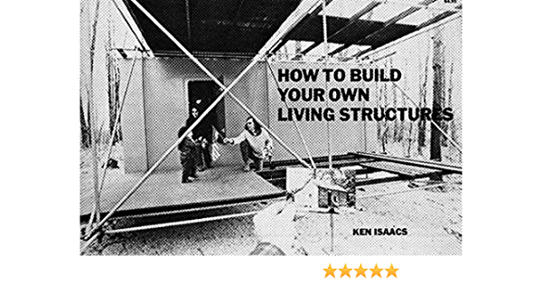

scaffold homes revision 9442
^ Projects infobox ^^
| image | Isaac-7-2-800x552.jpg |
| designers | |
| date | |
| vitamins | |
| materials | |
| transformations | |
| lifecycles | |
| tools | [[wrenches|Wrenches]] |
| parts | [[scaffolding|Scaffolding]], [[water_collection_systems|Water collection systems]], [[water_filters|Water filters]], [[showers|Showers]], [[bathrooms|Bathrooms]], [[power_trailers|Power trailers]], [[kitchens|Kitchens]], [[batteries|Batteries]] |
| techniques | [[tri_joints|Tri joints]] |
| files | |
| suppliers | |
| git | |
Introduction
Scaffolding, also called scaffold or staging, is a temporary structure used to support a work crew and materials to aid in the construction, maintenance and repair of buildings, bridges and all other man-made structures. Scaffolds are widely used on site to get access to heights and areas that would be otherwise hard to get to.
Challenges
- Permitting
- Foundations
- Sewer
- Water
- Power
- HOAs
Approaches


Making major changes to a parcel of land typically requires approval and a permit, with an associated cost. We hope to minimize complication by designing a structure which requires little or no modification to the land itself, and which provides it's own services in a small footprint.
- C-Head composting toilet
- 300 Gallon Black Above Ground Holding Tank
- Second-hand solar panels (5kW+)